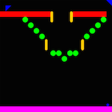

This semester’s group project is a pinball construction kit called Pingball. The original pinball is an arcade game in which the object is to keep a ball moving around in the game, without falling off the bottom of the playing area. The board has various bumpers on it that deflect the ball, and the player controls a set of flippers that can bat at the ball as it falls.

One possible implementation of Pingball. Your implementation will look different.
Pingball has several advantages over a traditional pinball machine. First, multiple people can play it over a network, connected with each other through a server. Each player has their own pinball board, but balls can leave one player’s board and enter another player’s board, running on a different computer. Second, the board layout is configurable by file, so that pinball boards may form complicated “Rube Goldberg” contraptions that are intended to be watched rather than played.
The project will be divided into two phases.
This document describes only phase 1. The purpose of phase 1 is to help you gain more experience with:
Clone your team’s Git repository using (all one line):
git clone ssh://username@athena.dialup.mit.edu/afs/athena.mit.edu/course/6/6.005/git/sp14/projects/gb1/username1-username2-username3.git pingball-phase1
where the three Athena usernames are in alphabetical order.
During the project, lecture and recitation meetings are replaced by team work time. You can work in the classrooms where we usually meet, where staff will be available to answer your questions. Your team can also work elsewhere if you choose, but you should use these times to work together.
Your team will be assigned a TA mentor who will help you with your design and help you stay on the right track as you implement it. You are required to meet with your TA several days into your project. Your TA will get in touch with you to set up that meeting. All team members should attend the meeting.
Other than reflections, all parts of the project should be committed in the repository you share with your teammates. Each commit to the repository should have a comment saying what you changed, as well as who worked on it. Your TA will be reviewing your git log to see individual contributions. Make sure you commit frequently!
During this project, you will perform the following tasks.
Team contracts. Before you begin, you should write and agree to a team contract.
Understand the problem. Read the Pingball specification carefully. It describes how your pingball game should work in this phase of the project.
Warmup. There is a warmup exercise that your group needs to do, explained below. It will help you learn how to use the physics engine we provide. You don’t have to use our provided physics engine, but you do have to do this warmup exercise with it before deciding to go your own way.
Design. You will need to create abstract datatypes for various parts of your system: bumpers, balls, boards, simulator, client, server, and parsers for wire protocol, user commands, and file format. Your software’s design is perhaps the most important part of the project; a good design will make it simpler to implement and debug your pingball game. Remember to write specifications for your classes and methods, to define abstraction functions and rep invariants, and to make thread safety arguments.
Implementation. Implement the project in Java. Remember to do test-first programming, and to write checkRep() methods and use assertions.
Testing. Test your entire system on the staff sample boards. Furthermore, create at least three additional board files as tests. These should show that your client is able to correctly parse and simulate the various gadgets that can appear on the board, with trigger relationships, and that multiple clients can exchange balls with each other. You should also have JUnit tests that test smaller components of your system, and your test cases should be developed in a principled way (e.g. input space partitioning) justified by a testing strategy described in a comment, as we’ve been doing all along.
Reflection. Individually, you will each write a brief commentary saying what you learned from this experience.
The Pingball specification describes how the pingball game should work in this phase of the project.
We have provided you with a library of physics methods for calculating the dynamics of elastic collisions. Documentation for the physics package is found online. Its key features are:
A jar file for physics package is provided in your starting repository. Source code for the physics package can be found inside the jar file. You can look at it by browsing into the jar file in Eclipse. You are welcome to use or not use this code as you please, and to modify it to meet your needs. While this source is provided in the event that you wish to examine or modify it, we generally discourage you from modifying it. Spend your energy on other parts of the project.
In order to get familiar with the physics package and get the hang of the pingball simulation part of the project, you should write a small program that simulates a single ball bouncing around an empty 20L x 20L board. The ball should have a fixed velocity and reflect off each wall that it collides with. Don’t simulate friction or gravity. As the ball bounces around, the board and ball should be printed periodically, in text format, to the console, at 10-20 frames per second.
The main() method of your program should be in the class Main in package warmup, i.e. in the file src/warmup/Main.java in your repo. You can create other classes in the warmup package that help make it work, like Board or Ball, or you can implement everything inside Main. The code in warmup will not be part of your final project implementation, you aren’t expected to write specs and tests for your warmup code. This is practice code for learning about the problem and how to solve it.
team-contract.pdf in the top level of your repo, in PDF format.warmup package; and (b) some progress on specifications for your major classes and methods, including a concurrency design (thread safety arguments for your client and server). You should have committed these specs to your repository as skeleton classes.Grades will be allotted according to the following breakdown:
The three intermediate milestones (team contract, warmup, and specs) will be graded as binary checkoffs, either passed or missed. Each milestone missed will cost 5 points on the overall project grade.
Starting with Problem Set 0, you have been using the Didit system for automated building and testing: every time you push your commits to Athena, the Didit build server pulls a copy of your code, attempts to compile it, and runs tests. This kind of automation is very common in the world of professional software development, and is very useful for coordinating a team of developers. There is no ambiguity about whether the code compiles or not: if it doesn’t compile on the build server, it doesn’t compile. And there is no ambiguity about whether the tests pass: if they don’t pass on the build server, they don’t pass.
For this project, Didit will run your tests: any JUnit tests you check in to your team’s project repository will be executed and the results included in your Didit build report.
Tests must be in the src directory with a name like somethingTest.java or somethingTests.java for Didit to find them.
Your tests will be run in an environment with limited permissions and resources. Any deliberate attempts to circumvent these restrictions are a violation of course policy and academic standards, and will be dealt with harshly. However:
Your code runs with read-only access to your src directory.
You may also access directories named boards and resources at the root of your project, if you want a place to commit additional project assets.
If you find that Didit is unable to run some of your tests but you think they are reasonable and should be supported, email the TAs and include “Didit test restrictions” in the subject line. Hopefully we will be able to make Didit more accommodating.
You may have some tests Didit cannot run. Don’t let Didit’s restrictions stop you from writing such tests. Instead, for these tests, include the Javadoc tag @category no_didit on the test class. All tests in that file will be ignored. You cannot use @category no_didit on methods — you must use it on the class. Here’s an example:
package pingball;
import org.junit.Test;
/**
* Test some super complicated stuff.
* @category no_didit
*/
public class SuperComplicatedTest {
@Test public void testRelativisticVelocities() {
// Didit will not run this test
}
// nor any other tests in this file
}On your build results page, Didit will report which tests it attempted to run, and which tests it skipped. Make sure you and your teammates are running those tests manually.
If you include no tests, Didit will count that as a pass — remember to also check whether your code compiled!